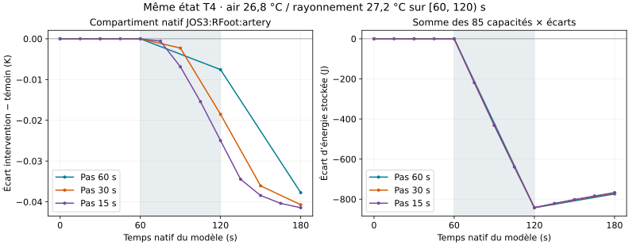

Modèle de recherche JOS-3 ; aucune validation expérimentale humaine ni commande de l’avatar. Chaque calcul reprend le même état initial debout T4 : homme théorique de 30 ans, 1,70 m, 60 kg, PAR 1,4 ; humidité 40 %, air 0,2 m/s, vêtements 0 clo.
Le calcul est disponible uniquement avec le moteur local optionnel. La version statique conserve les séries reçues.
Les conditions initiales sont air 28 °C et rayonnement 28 °C. Pendant l’intervalle choisi, seules les deux frontières ci-dessous changent. Aucun tissu n’est fixé à ces températures.
Seulement les températures d’air et de rayonnement du modèle, sur l’intervalle et la grille choisis. Le profil et les 85 températures initiales T4 restent fixes. Les sorties sont la peau moyenne et le sang central du modèle, accompagnés d’un reçu numérique.
Le calcul local ne commande ni l’avatar, ni P1, ni une horloge physiologique commune. Les 85 états détaillés sont disponibles dans les bilans T13 reçus ; ils ne sont pas tous renvoyés par ce moteur compact.
Examiner le bilan natif et le candidat P1Vérification du moteur local…
26 à 28 °C, durée maximale 3 600 s. Les bornes doivent coïncider avec le pas choisi : aucun arrondi. Ce domaine est une limite du logiciel, pas une plage validée chez l’humain.
Températures en fin de pas ; les frontières affichées ont été appliquées pendant le pas précédent. Le temps est propre à ce modèle et n’est pas synchronisé avec les autres modules. Les résultats précédents restent affichés si une nouvelle demande échoue ou est annulée.
La matrice numérique ci-dessous est entièrement exécutée. POLY n’est pas pour autant terminé. Les calculs reçus ne sont pas relancés pour remplir le bilan. Les calculs sans données ou mécanisme qualifiés restent explicitement ouverts.
Même état initial T4, durée 600 s, pas 60/30/15 s. Air et rayonnement varient séparément ou ensemble entre les bornes reçues : 26 et 28 °C. Deux intervalles, dès l’origine ou au milieu du calcul ; un témoin compatible pour chaque intervalle et chaque pas. Cette matrice finie ne teste pas toutes les valeurs possibles du domaine continu.
| Air/rayonnement | Intervalle | Pas 60 s | Pas 30 s | Pas 15 s | Écart grilles 60/15 s |
|---|---|---|---|---|---|
| 26/28 °C | [0, 600) s | 0.401421 | 0.409766 | 0.414043 | 0.023737 |
| 26/28 °C | [120, 480) s | 0.301384 | 0.310703 | 0.315601 | 0.023321 |
| 28/26 °C | [0, 600) s | 0.489860 | 0.506317 | 0.514656 | 0.028573 |
| 28/26 °C | [120, 480) s | 0.309001 | 0.320238 | 0.327468 | 0.027763 |
| 26/26 °C | [0, 600) s | 0.866627 | 0.897194 | 0.912651 | 0.059391 |
| 26/26 °C | [120, 480) s | 0.548881 | 0.556473 | 0.567562 | 0.055801 |
560 pas et 47 600 températures ont été contrôlés par reconstruction indépendante des opérateurs ; les 18 paires ont aussi été exportées et reprises à l’identique. Plus grand résidu global : 1,15 × 10−10 W ; résidu énergétique cumulé : 8,17 × 10−9 J. Aucun ajustement des paramètres. Les différences entre pas ne sont pas une précision physiologique ni une borne générale d’erreur.
Le registre natif peut maintenant conserver l’instant consulté. La paire d’exemple ci-dessous, au pas de 60 s, reprend une consultation à 120 s, tout en gardant son état final calculé à 600 s. Changer la consultation ne recalcule aucune température et ne synchronise pas les autres modules. Les anciens exports sans repère de consultation restent acceptés.
Le registre joint rattache les treize groupes de calculs aux preuves et aux manques, ainsi qu’aux 60 exigences du référentiel. Il ne transforme pas une exigence en résultat accompli.
Résultats et contrôles des 18 comparaisons · Registre des calculs et blocages ·
Une sensibilité mesurée, sans borne d’erreur garantie. Six calculs indépendants du même modèle T4 : trois interventions et trois témoins. Air 26,8 °C et rayonnement 27,2 °C sur [60, 120) s, puis retour à 28/28 °C ; durée totale 180 s. Le témoin reste à 28/28 °C. Cette étude fixe ne se recalcule pas avec les champs ci-dessus.
Pour chaque pas, on soustrait le témoin à l’intervention. On compare ensuite ces écarts entre grilles, aux seuls instants natifs communs 60, 120 et 180 s, sur les mêmes 85 identités, sans interpolation.
| Pas comparés | Écart de température | Écart d’énergie totale |
|---|---|---|
| 60 / 30 s | 0.010961 K | 4.423314 J |
| 30 / 15 s | 0.006438 K | 2.336517 J |
| 60 / 15 s | 0.017399 K | 6.759831 J |
Les maxima de température apparaissent à 120 s, dans les compartiments artériels natifs des pieds : gauche et droite sont équivalents à 10⁻¹⁰ K près. Les maxima d’énergie totale apparaissent à 180 s. Ces identités décrivent le modèle ; elles ne localisent pas des mesures humaines dans l’avatar.

Les points sont les fins de pas natives ; les segments servent de guides de lecture. La zone grise marque l’intervalle de perturbation. Les différences entre grilles se réduisent ici entre 30 et 15 s, mais le pas de 15 s n’est pas une solution exacte. Les puissances moyennes de pas de durées différentes ne sont pas comparées comme des valeurs instantanées.
Les bilans énergétiques et les contre-calculs numériques sont reçus séparément. Ils ne prouvent ni la validité biologique, ni un repos physiologique global stable. Cette étude n’établit aucune précision générale pour les autres conditions.
Télécharger les résultats, maxima et empreintes des six sources · Télécharger la paire complète au pas de 15 s — cette paire peut être reprise dans « Reprendre un registre natif complet » ci-dessus.